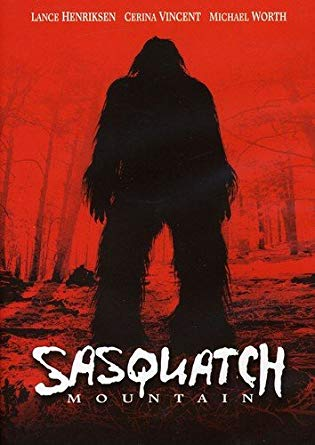
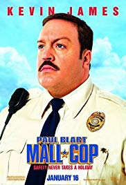
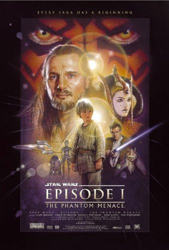
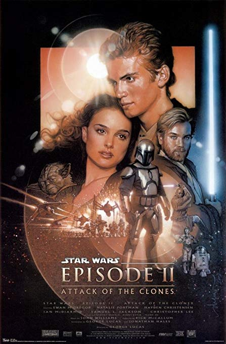

These movies don't get an image. They are:
Sasquatch Mountain is by no means a perfect movie, but I find it extremely not bad, with many really quite good ideas. I first saw it when it premiered on TV(!) in 2006, and was mesmerized by the atmosphere. It stayed in my memory for many years until reseeing it a bunch of times in 2019. I highly encourage anyone to check it out; everyone who writes about this movie says it is complete trash, but I find the plot, (some) performances, characters, and atmosphere pretty darn respectable, especially given its meager budget.
I am very surprised no one seems to like this movie. When I first saw it I found it very exciting. Kevin James gives a great performance. The villain is annoying, but in a way where you root for the hero even more, instead of getting tired of the movie. The plot is dumb, but anyone who takes this movie that seriously in that kind of way is a total snob. The strength of the movie, for me, is Kevin James' character, and transforming the mundane setting of a mall into an action center. The movie plays to a young kid's fantasies of the crushingly boring suburbs becoming a place to be leapt over and used in action.
I know, I know. Midichlorians. Jar-Jar. Little Anakin. But here's a thought. What's the real reason we go to see a Star Wars movie? It's to see incredible things, like starting out on a spaceship, taking a detour to the planet below, taking a detour to a pond in a remote forest on that planet, finding a frickin' underwater city(!), an underwater adventure through the cavernous core of the planet (seriously, how is this the only sci-fi movie where we go underwater? It's Jaws on steroids, but one can have infinitely more frightening creatures appear than sharks), podracing, and a dope battle, where it includes an army of droids and an army of aliens with strange alien weapons this time. Also, Darth Maul is one of the best characters in the Star Wars universe. Ray Park rules!
I also enjoy the ethereal feel and quiet moments of this movie. This is the first movie that tells the story of how the universe got to Luke Skywalker's universe. It carries its own mythos.
As for Jar-Jar, when I was a kid, I liked him. I appreciate Lucas taking risks, and we see less of him as the series goes on, correcting for his mistakes. Lucas understands that the main focus of a Star Wars movie should be the creativity of the universe created, and this is what he focuses on.
I know, I know. The dialogue. But here's a thought. What's the real reason we go to see a Star Wars movie? It's to see incredible things, like starting out with a bang, an alien assassination attempt truly creepy and assassin-y, a 3-way chase through an AMAZING city at night, during which Obi-wan just hangs on with his hands on a small droid, a tense moment at an alien bar, the fantastic imagery of Kamino, an actual tusken camp, a fantastic sequence in a droid factory where the factory gets involved (honestly, how novel is that? For once we actually see the world in which sci-fi gizmos are created), the Roman colliseum Star Wars-ified, the amazing battles that follow, and the lightsaber climax. Yoda isn't a puppet anymore. Yes, the dialogue is terrible, but it's a small price to pay for the real reasons one goes to see a Star Wars movie. This movies is one fantastic, world-exploring sequence after another. Note: I also really like Revenge of the Sith, but a lot of other people do too, so it does not fit this description.
Also, I'm just gonna leave this here: Star Wars: the Clone Wars has one of the greatest battle sequences I have ever seen. If the rest of the movie were a bit better, I would put that movie on here, but a miraculous and genius action sequence doesn't make a movie. But man, that is SO GOOD! No wonder, the movie was directed by Dave Filoni, who directed the amazing action sequence that is The Blue Spirit in Avatar: the Last Airbender.
A lot of people found this movie too slow. I certainly don't enjoy when main characters bicker and fight. But I'm a huge sucker for atmosphere, and this movie has a great sense of paranoia all the way through it. The thought of being hunted by fearsome magicians and not being able to stay in any one town too long is immensely exciting. I also appreciate how they walk everywhere. It's a bit reminiscent of the excitement the gaang in Avatar: the Last Airbender experiences when they are in enemy territory, except here it's more intense because they're on foot. Also, Godric's Hollow looks a lot like my hometown in Wisconsin, so that is another way this movie's atmosphere resonates with me. Also, there really is no objection to any technical points of the movie; just the slowness, which makes sense when you're on foot, constantly on the alert. When you're paranoid, time goes by slowly. I maybe would prefer it if the movie just allowed me to savor the excitement just a little longer.